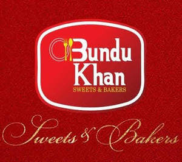

Trade Mark Journal No.2025/019 9 May 2025
UK00004192079 21 April 2025 (30,35,43)

- Class 30
- Petits fours; Shao mai; Petit fours; Dulce de leche; Petits fours [cakes]; Dutch gingerbread (taai taai); Pâtés en croûte; Acanthopanax tea (Ogapicha); Gukhwacha; Beverages based on tea; Beverages based on coffee; Drinks based on cocoa; Half covered chocolate biscuits; Lo mein; Drinks based on chocolate; Beverages based on chocolate; Lo mein [noodles]; Dried sugared cakes of rice flour (rakugan); Injeolmi [glutinous rice cakes coated with powdered beans]; Coffee substitutes [artificial coffee or vegetable preparations for use as coffee]; Ice cream cakes; Chocolate drink preparations flavoured with banana; Chocolate-coated rice cakes; Ice cream desserts; Snack food products made from rice flour; Coffee-based beverages containing ice cream (affogato); Snack food products made from soya flour; Chocolate syrups for the preparation of chocolate based beverages; Tapioca flour for food; Tapioca flour [for food]; Glutinous pounded rice cake coated with bean powder (injeolmi); Ice creams flavoured with chocolate; Chocolate for confectionery and bread; Tea of salty kelp powder (kombu-cha); Mixtures for making ice cream confections; Aerated beverages [with coffee, cocoa or chocolate base]; Ice cream with fruit; Fruit ice cream; Snack food products made from potato flour; Rice cake snacks; Ice cream confectionery; Coffee [roasted, powdered, granulated, or in drinks]; Aerated drinks [with coffee, cocoa or chocolate base]; Edible ice powder for use in icing machines; Ice lollies being milk flavoured; Chocolate beverages with milk; Non-medicated flour confectionery coated with imitation chocolate; Iced fruit cakes; Milk chocolate teacakes; Chocolate food beverages not being dairy-based or vegetable based; Bread made with soya beans; Potato flour confectionery; Non-medicated flour confectionery coated with chocolate; Soya based ice cream products; Ice cream confections; Soya-based ice cream substitutes; Cocoa [roasted, powdered, granulated, or in drinks]; Powders for making ice cream; Binding preparations for ice cream [edible ices]; Rice dumplings dressed with sweet bean jam (ankoro); Cream cakes; Sticky rice cakes (Chapsalttock); Chocolate-based beverages with milk; Soya flour for food; Powder for making ice cream; Sauces for ice cream; Frozen confectionery containing ice cream; Non-medicated flour confectionery containing imitation chocolate; Non-medicated flour confectionery containing chocolate; Ice cream sandwiches; Snack food products made from maize flour; Chocolate drink preparations flavoured with mocha; Chocolate drink preparations flavoured with orange; Yoghurt based ice cream [ice cream predominating]; Cheese flavored puffed corn snacks; Ice beverages with a chocolate base; Kimchijeon [fermented vegetable pancakes]; Ice milk [ice cream]; Cocoa beverages with milk; Chocolate drink preparations flavoured with nuts; Stir fried rice cake [topokki]; Chocolate drink preparations flavoured with toffee; Chocolate pastries; Ice cream drinks; Bread with soy bean; Biscuits containing chocolate flavoured ingredients; Foodstuffs made of sugar for sweetening desserts; Tea beverages with milk; Flavourings of almond for food or beverages; Mizu-yokan-no-moto [Japanese confectionery made from sweet adzuki bean jelly]; Frozen yogurt cakes; Prepared savory foodstuffs made from potato flour; Snack food products made from rusk flour; Coffee beverages with milk; Snack food products made from cereal flour; Biscuits having a chocolate flavoured coating; Chocolate flavoured beverage making preparations; Chocolate coffee; Powdered starch syrup [for food]; Rice cakes; Cakes (Rice -); Fruit ice creams; Ice beverages with a cocoa base; Non-dairy ice cream; Ice creams containing chocolate; Powders for ice cream; Ice cream powders; Roasted brown rice tea; Chocolate drink preparations flavoured with mint; Ice beverages with a coffee base; Chocolate cakes; Flour for making dumplings of glutinous rice; Rice flour porridge; Chocolate flavoured beverages; Mixtures for making ice cream; Rice biscuits; Chocolate bark containing ground coffee beans; Chocolate beverages containing milk; Peanut butter confectionery chips; Vegan ice cream; Soy-based ice cream substitute; Flour based savory snacks; Boiled sugar confectionery; Shaved ice with sweetened red beans; Almond pastries; Snack foods prepared from potato flour; Mixtures for making ice cream products; Ice cream powder; Deep chocolate cake made with chocolate sponge; Chocolate desserts; Truffle cream sauces; Cereal snack foods flavoured with cheese; Kimchijeon [Korean-style pancakes made with fermented vegetables]; Cornflour bun bread (almojábana); Potato flour for food; Potato flour [for food]; Chocolate syrups; Dairy ice cream; Nerikiri [traditional Japanese confectionery consisting of a soft sugared bean-based shell containing sweet bean jam]; Buckwheat flour [for food]; Buckwheat flour for food; Ice cream mixes; Bread flavored with spices; Ice-cream cakes; Iced sponge cakes; Korean traditional rice cake [injeolmi]; Milk chocolate.
- Class 35
- Sales promotions at point of purchase or sale, for others; Advisory services relating to business management and business operations; Business management; Help in the management of business affairs or commercial functions of an industrial or commercial enterprise; Business administration services; Business management services; Commercial business management; Management of business offices for others; Business marketing services; Consulting services in business organization and management; Business management advice relating to manufacturing business; Business management for shops; Business planning services; Business brokerage services; Business organization and operation consultancy; Business administration; Business secretarial services; Business organization consulting; Business consulting; Business organization and management consulting; Business administrative services for the relocation of businesses; Business management for a trade company and for a service company; Business accounting advisory services; Business advisory services relating to business liquidations; Business management and organization consultancy services; Advisory services for business management; Business management advisory services; Management (Advisory services for business -); Company office secretarial services; Business marketing consulting services; Business management consulting services; Business management and consulting services; Business planning services for enterprises; Business management consulting; Business management of theaters; Business strategy services; Business management and consulting; Business consulting services; Commercial assistance in business management; Business management and enterprise organization consultancy; Business organisation and management consulting services; Business advisory services; Business management and administration; Business administration and management; Business project management services; Business administration consultancy; Business management assistance in the operation of restaurants; Business management and organization consultancy; Business accounts management; Assistance to commercial enterprises in the management of their business; Consultancy regarding business organisation and business economics; Business management of restaurants; Business organization consultancy; Business assistance, management and administrative services; Administration of the business affairs of retail stores; Business planning; Business management advisory services relating to commercial enterprises; Business management organisation; Providing business management and operational assistance to commercial businesses; Office functions services; Business management assistance for industrial or commercial companies; Advisory services (Business -) relating to the management of businesses; Business management consultancy services; Business consulting for enterprises; Business management and consultancy services; Business organisation and management consulting; Business management advisory services relating to industrial enterprises; Business management of hospitals; Interim business management; Administration of the business affairs of franchises; Business management planning; Business auditing; Business management consultancy; Advisory services and information in business organization and management; Assistance in franchised commercial business management; Advisory services (Business -) relating to the management of public sector businesses; Business management assistance; Assistance (Business management -); Assistance with business management; Business management of an airline company; Business management of retail outlets; Business management and consultancy; Business organisation consulting; Advisory services (Business -) relating to the operation of franchises; Business process management and consulting; Business research services; Business networking services; Business strategy and planning services; Business management of hotels; Hotels (Business management of -); Business marketing consultation services; Business management assistance in the establishment and operation of restaurants; Business consultancy; Business management services relating to the development of businesses; Business management consultancy in the field of corporate travel; Business management and consultation services; Business organization advice; Business representative services; Business organizational consultation; Business management of conference centers; Business management for freelance service providers; Business management services for footballers; Assistance in management of business activities; Business consultancy services; Business advisory services relating to the establishment and operation of franchises; Business advisory services relating to company performance; Business strategy development services; Business supervision; Business process management; Business marketing consultancy; Management assistance in business affairs; Outsourcing services in the field of business operations; Administration of business affairs; Business management of airports; Business risk management services; Business research for new businesses; Business management advisory services relating to franchising; Business appraisal services; Business intelligence services; Professional business consultation relating to the operation of businesses; Business management and organisation consultancy services; Business intermediary services; Business merger services; Business management and consultation; Business and commercial information services; Business management consultation; Business management of models; Business organisation; Business promotion services; Business merchandising display services; Business project management; Advisory services relating to business organization; Business management of visitor attractions; Professional business consulting.
- Class 43
- Buildings [Rental of transportable -]; Temporary accommodation services; Providing temporary accommodation; Services for providing food; Charitable services, namely providing temporary accommodation; Providing temporary housing accommodations; Emergency shelter services [providing temporary housing]; Catering services for the provision of food; Providing information about temporary accommodation services; Providing food and drink catering services for exhibition facilities; Arranging and providing temporary accommodation; Providing food and drink catering services for convention facilities; Providing emergency shelter services in the nature of temporary housing; Services for providing food and drink; Providing temporary lodging for guests; Providing food and drink catering services for fair and exhibition facilities; Providing temporary accommodation as part of hospitality packages; Temporary accommodation reservation services; Charitable services, namely providing food and drink catering; Providing assisted living facilities [temporary accommodation]; Catering services for the provision of food and drink; Providing temporary accommodation in holiday homes; Providing temporary accommodation in boarding houses; Temporary accommodation services provided by holiday camps; Providing restaurant services; Accommodation services; Provision of temporary accommodation; Temporary accommodation information, advice and reservation services; Providing guesthouse services; Providing temporary accommodation in holiday flats; Providing drink services; Services for providing drink; Agency services for the reservation of temporary accommodation; Services for the provision of food and drink; Provision of temporary work accommodation; Arranging of temporary accommodation; Providing accommodation for functions; Hospitality services [accommodation]; Restaurant services for the provision of fast food; Arranging temporary housing accommodations; Temporary accommodation; Catering for the provision of food and beverages; Provision of temporary lodgings; Providing hotel accommodation; Provision of temporary furnished accommodation; Contract food services; Travel agency services for booking temporary accommodation; Food preparation services; Providing food to needy persons [charitable services]; Club services for the provision of food and drink; Reception services for temporary accommodation (conferment of keys); Holiday accommodation services; Catering services for providing European-style cuisine; Providing temporary lodging at holiday camps; Providing food and beverages; Catering for the provision of food and drink; Food reviewing services [provision of information about food and drinks]; Accommodation services for functions; Charitable services, namely, providing food to needy persons; Hotel accommodation services; Catering services for providing Japanese cuisine; Catering services for providing Spanish cuisine; Services for reserving holiday accommodation; Providing accommodation for meetings; Information, advice and reservation services for the provision of food and drink; Consultancy services relating to food; Providing hotel and motel services; Consultancy services in the field of food and drink catering; Providing temporary trailer park facilities; Reception services for temporary accommodation [management of arrivals and departures]; Providing travel lodging information services and travel lodging booking agency services for travelers; Hospitality services [food and drink]; Take-away food services; Providing information about temporary accommodation via the Internet; Providing food and drink for guests; Services for the preparation of food and drink; Food and drink preparation services; Coffee supply services for offices [provision of beverages]; Tourist camp services [accommodation]; Hotel catering services; Accommodation services for meetings; Tour operator services for the booking of temporary accommodation; Catering services; Office catering services for the provision of coffee; Providing food and drink; Providing of food and drink; Rental of temporary accommodation; Accommodation (Rental of temporary -); Rental of accommodation [temporary]; Night club services [provision of food]; Holiday planning services [accommodation]; Reservation services for accommodation; Accommodation reservation services; Consultancy services relating to food preparation; Accommodation bureaux services; Accommodation reservations (Temporary -); Temporary accommodation reservations; Reservations (Temporary accommodation -); Providing food and drink for guests in restaurants; Resort lodging services; Takeaway food services; Rental of food service equipment; Accommodation bureau services; Provision of trade show facilities [accommodation]; Booking services for accommodation.
AL-HAAJ BUNDOO KHAN LTD
Representative: SHAHID JAVED